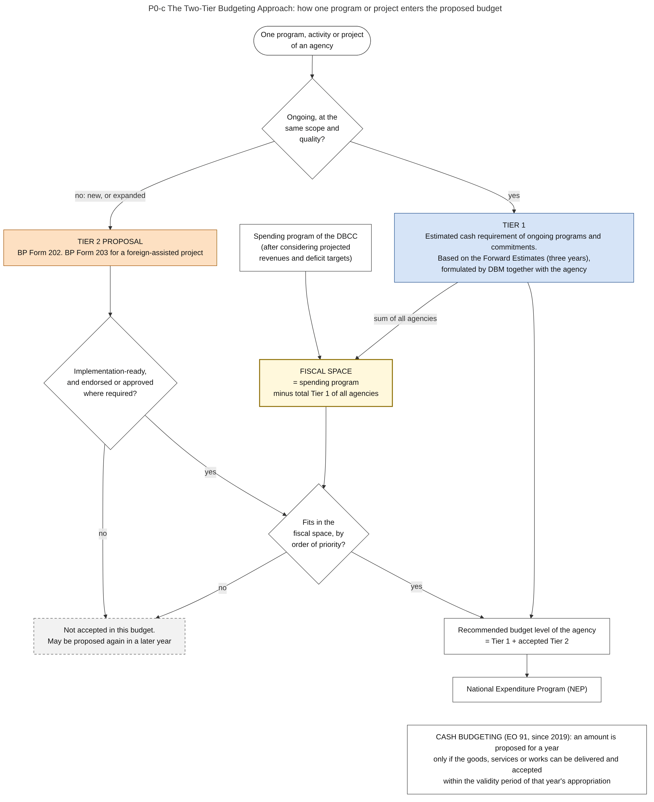

Diagram P0-c · Mermaid flowchart
The Two-Tier Budgeting Approach: how one program or project enters the proposed budget
Question: Why are some proposals accepted almost automatically while others must compete, and what decides the amount of money available for competition?
In: P0. Preparation

What the diagram shows
- Question: why are some proposals accepted almost automatically while others must compete, and what decides the amount of money available for competition?
- Idea: the cost of what the government already does is fixed first (Tier 1). Only the money that remains under the spending ceiling (the fiscal space) is available for new or expanded programs (Tier 2).
- Sources: definitions of Tier 1, Tier 2 and fiscal space, Forward Estimates, BP Forms 202 and 203, conditions of readiness and endorsement [NBM156]. Cash budgeting rule in the last node [EO91].
- General knowledge, not opened in a source here: what happens to a proposal that is not included.
Code

---
title: "P0-c The Two-Tier Budgeting Approach: how one program or project enters the proposed budget"
config:
flowchart:
wrappingWidth: 460
---
flowchart TB
%% QUESTION THIS DIAGRAM ANSWERS: why are some proposals accepted almost automatically while others must compete, and what decides the amount of money available for competition?
%% IDEA: the cost of what the government already does is fixed first (Tier 1). Only the money that remains under the spending ceiling (the fiscal space) is available for new or expanded programs (Tier 2).
%% SOURCES: definitions of Tier 1, Tier 2 and fiscal space, Forward Estimates, BP Forms 202 and 203, conditions of readiness and endorsement [NBM156]. Cash budgeting rule in the last node [EO91].
%% GENERAL KNOWLEDGE, NOT OPENED IN A SOURCE HERE: what happens to a proposal that is not included.
A(["One program, activity or project<br/>of an agency"]) --> Q1{"Ongoing, at the<br/>same scope and<br/>quality?"}
Q1 -- "yes" --> T1["TIER 1<br/>Estimated cash requirement of ongoing programs and commitments.<br/>Based on the Forward Estimates (three years),<br/>formulated by DBM together with the agency"]:::t1
Q1 -- "no: new, or expanded" --> T2["TIER 2 PROPOSAL<br/>BP Form 202. BP Form 203 for a foreign-assisted project"]:::t2
T2 --> Q2{"Implementation-ready,<br/>and endorsed or approved<br/>where required?"}
Q2 -- "no" --> X1["Not accepted in this budget.<br/>May be proposed again in a later year"]:::out
Q2 -- "yes" --> Q3{"Fits in the<br/>fiscal space, by<br/>order of priority?"}
CEIL["Spending program of the DBCC<br/>(after considering projected<br/>revenues and deficit targets)"] --> FS["FISCAL SPACE<br/>= spending program<br/>minus total Tier 1 of all agencies"]:::fs
T1 -- "sum of all agencies" --> FS
FS --> Q3
Q3 -- "no" --> X1
Q3 -- "yes" --> L["Recommended budget level of the agency<br/>= Tier 1 + accepted Tier 2"]
T1 --> L
L --> NEP["National Expenditure Program (NEP)"]
N["CASH BUDGETING (EO 91, since 2019): an amount is proposed for a year<br/>only if the goods, services or works can be delivered and accepted<br/>within the validity period of that year's appropriation"]
NEP ~~~ N
classDef default fill:#ffffff,stroke:#444444,color:#111
classDef t1 fill:#d6e4f7,stroke:#1f4e8c,color:#111
classDef t2 fill:#fde0c2,stroke:#a35200,color:#111
classDef fs fill:#fff8dc,stroke:#8a6d00,color:#111,stroke-width:2px
classDef out fill:#f2f2f2,stroke:#555555,color:#111,stroke-dasharray: 5 4